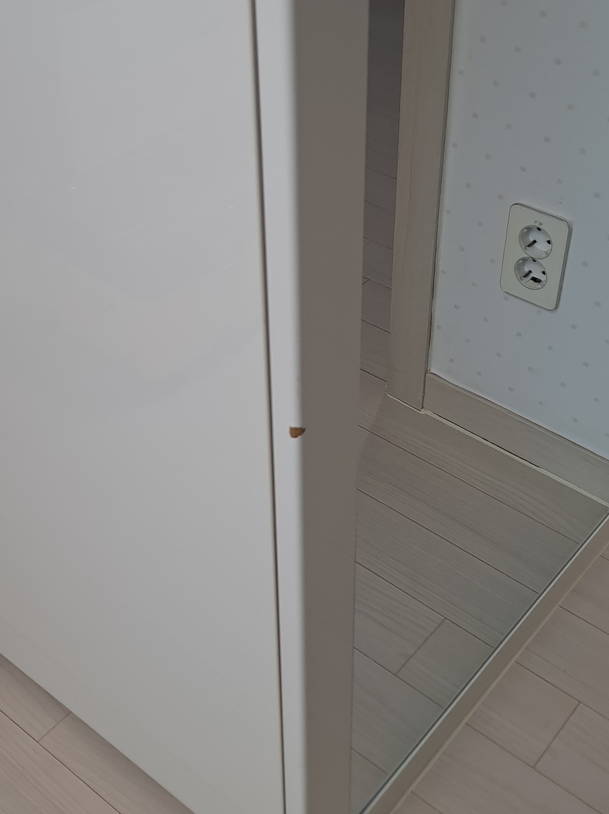
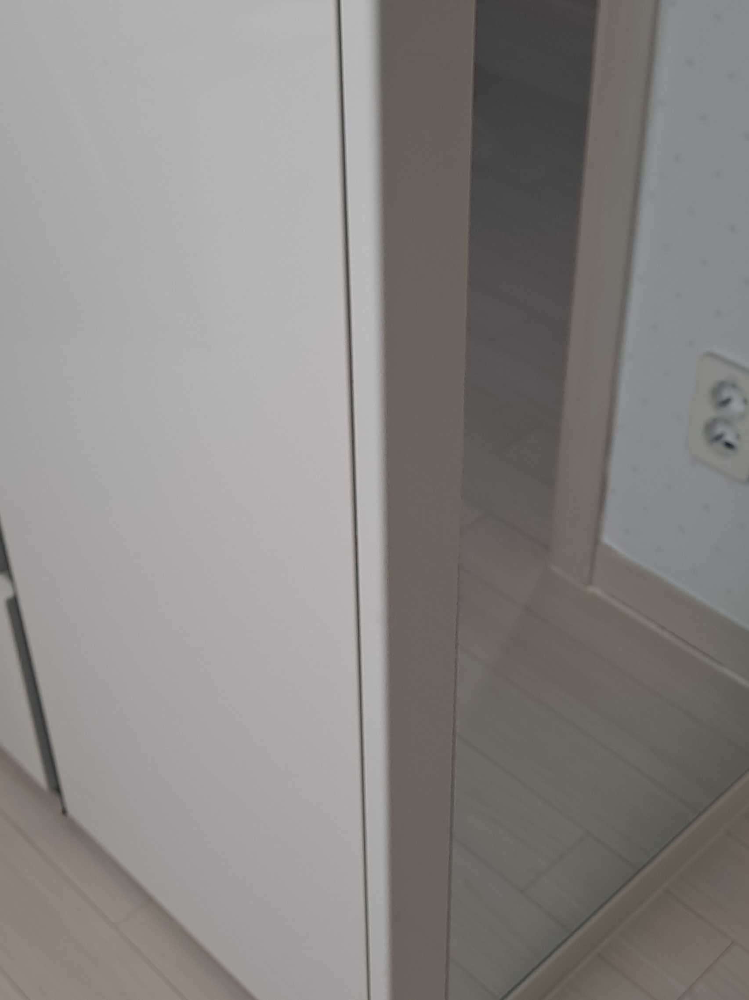

기존 가구 유지
멀쩡한 붙박이장과 신발장은 그대로 두고 찍힌 부분만 수리합니다.
가구를 빼는 과정에서 붙박이장이 찍혀 표면 필름이 벗겨진 현장입니다. 같은 필름을 구할 수 없어 필름 업체에서는 붙박이장 전체 시공이 필요하다고 안내했지만, 작은 손상 때문에 공사 범위를 넓히는 대신 기존 붙박이장을 살리는 부분복원을 선택하셨습니다.

붙박이장과 신발장 필름은 같은 계열의 색이라도 미세한 명암과 무늬가 다릅니다. 파인 내부를 단단하게 보강하고 주변 표면과 높이를 맞춘 뒤, 현장에서 색상을 조절하고 기존 필름의 무늬와 광도를 재현해야 수리 부위의 이질감을 줄일 수 있습니다.
손상이 한두 곳에 국한됐다면 기존 필름을 모두 제거하지 않고 필요한 부분만 복원할 수 있습니다.
멀쩡한 붙박이장과 신발장은 그대로 두고 찍힌 부분만 수리합니다.
비슷한 새 필름으로 전체를 바꾸는 대신 기존 색상과 무늬에 맞춥니다.
필름 전체 제거와 재시공 없이 비교적 빠르게 마무리합니다.
작은 찍힘 때문에 가구 전체를 시공하는 비용 부담을 줄일 수 있습니다.
들뜬 필름과 파인 바탕을 정리한 뒤 표면 높이, 색상, 무늬와 광도를 단계별로 맞춥니다.
주변 가구와 바닥을 보호하고 필름과 내부 바탕의 손상 범위를 확인합니다.
들뜨고 약해진 필름 가장자리를 정리해 안정적인 바탕을 만듭니다.
찍혀 파인 부분을 보강하고 주변 붙박이장과 표면 높이를 맞춥니다.
기존 필름의 색상과 미세한 무늬를 확인하며 손상 부위에 이어줍니다.
광도와 질감을 정리하고 여러 각도에서 복원 상태를 확인합니다.
벗겨진 필름과 파인 내부를 보강해 표면 높이를 맞추고, 기존 붙박이장의 색상과 무늬를 이어 약 1시간 만에 마무리했습니다.

“필름 작업 없이도 감쪽같이 찍힌 부분이 없어지네요! 신발장도 찍힘이 있는데 거기도 다음에 시공 부탁드려요^^”
| 비교 항목 | 부분복원 | 전체 필름 시공 |
|---|---|---|
| 비용 | 손상 부위 중심으로 비교적 부담이 적음 | 가구 전체 자재와 시공 비용이 발생 |
| 작업시간 | 현장 상태에 따라 비교적 짧음 | 기존 필름 제거와 전체 시공 시간이 필요 |
| 생활 불편 | 작업 범위가 작아 불편을 줄일 수 있음 | 가구 문짝과 주변까지 작업 범위가 넓음 |
| 완성도 | 기존 색상과 무늬에 맞춰 손상 부위를 연결 | 새 필름으로 가구 전체를 통일 |
| 효과 | 국소 찍힘을 복원하고 기존 마감을 유지 | 노후·들뜸이 넓은 필름을 전체 교체 |
가구 전체와 손상 부위를 함께 보내주시면 필름 색상과 파손 상태를 확인해 상담합니다.